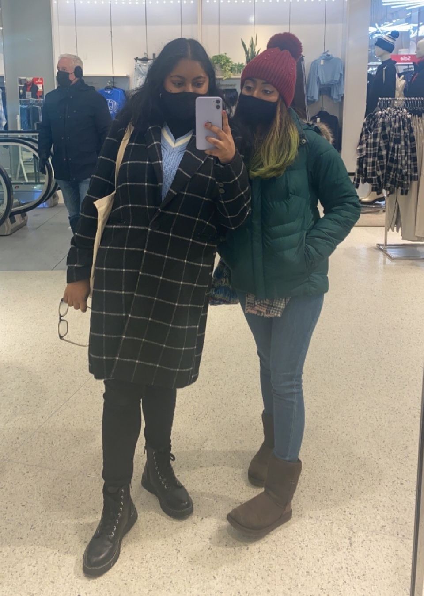

December 26th

Sharmin and I have a tradition where we always do something on the day after Christmas. Last year we made vision boards and we really like it so this year we decided to continue. It was a Sunday so I went to church, chilled for a bit and then I was on my way to her house. I got there at around 12:30. Once I arrived, we got straight to work. We both got our supplies and photos and started creating. This year, I printed out pictures of my actual goals instead of just inspirational words or photos of people. While we were making it, Sharmin's mom finished cooking lunch and she wanted us to eat it while it was hot so we paused everything and went to eat. While we ate, Sharmin and I watched The Vampire Diaries because that was the show I was currently watching and Sharmin had already watched it. When we were done eating we got back to working on our vision boards. There wasn't that much work left to do since we had already formatted everything. After that, we played some games and chilled. Then my dad came and picked me up. It was a fun and calm day.
January 8th
Earlier this week, I was randomly chosen by CUNY to get covid tested. I had to get tested at a CUNY site so that it would automatically be uploaded to my CUNY profile. Brooklyn College does testing on Saturdays and they open at 9am so to avoid lines, I went for 10am. It was a very smooth and fast process. When that was done I walked to the Q train station. I took the uptown Q train to newkirk plaza where Sharmin was supposed to hop on my train. She was late so I got off the train and waited for her in the train station.
When Sharmin arrived, we hopped on the Q train and took it to Times Square. First we went to H&M because it was the first store we saw as soon as we came out of the train station. We walked around a bit but they didn't really have anything good. Then we made our way to BOOKOFF, which was the bookstore that we had originally planned to go to. BOOKOFF is primarily a bookstore but they also sell pop figures, electronics, DVDs, CDs, and so much more. We spent about 2 hours in the store just browsing through book trying to find good ones. To be honest, it's such a cool store and a lot of the books are super cheap and in great condition!! After we were done there, we went to Forever 21 and surprisingly they had buy one get one free on all sale items. They had pretty nice stuff and for great prices, so we each picked up a couple things. Then went back to the train station and were on our way home. We hadn't went out in such a long time so it was a great day and worth it for all the things we got.